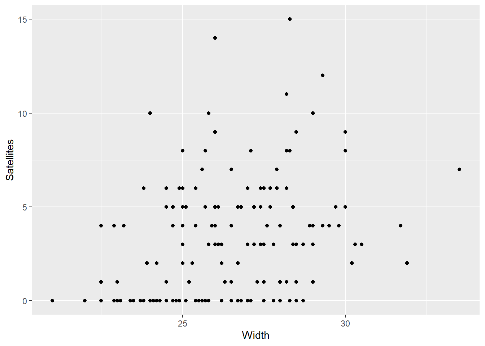
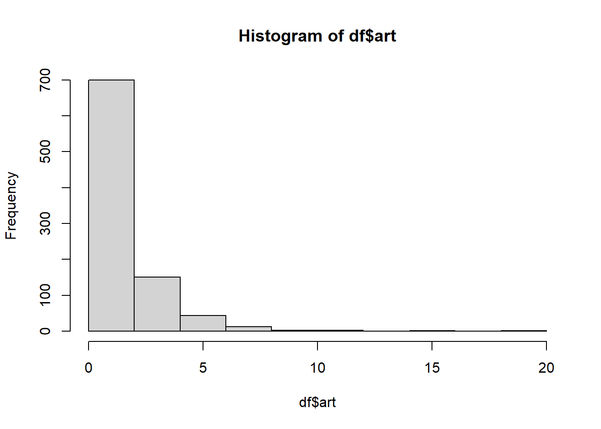

library(tidyverse)6 Disp & 0 Inflation
Learning Objectives
After successful completion of this module, you will be able to:
- Write out the expression of a zero-inflated Poisson regression model, including the response distribution and the model equations.
- Describe the distinctions between over dispersion and zero-inflation.
- Describe the distinction between “true zeroes” and “excess zeroes” and provide some examples.
- Describe the key difference between zero-inflated models and hurdle models.
In R:
- Fit ZIP and ZINB regression models, and Poisson and negative binomial hurdle regression models, and make comparisons among these models.
- Use simulations to understand what zero-inflation and over dispersion look like in certain situations.
- Prepare and submit an R markdown script.
Task list
In order to achieve these learning outcomes, please make sure to complete the following:
Review Module 6 Readings and LecturesSubmit Module 6 HomeworkSubmit Module 6 LabTake the Module 6 Content Quiz and R QuizParticipate in the Module 6 Discussion
6. Zero-Inf Lectures
Code
#
# Fit and compare ZIP and and ZINB models to the Crab data
#
library(ggplot2)
#install.packages("pscl")
library(pscl) # access the zeroinfl function
library(MASS) # access the glm.nb function
library(glm2) # access the crab data ***order of accessing these
# libraries is important for getting the
# appropriate crabs dataset
data(crabs, package = "glm2")
work = crabs
head(work)
ggplot(work,aes(Width,Satellites)) + geom_point()
# fit the ZIP model
mod1 = zeroinfl(Satellites~Width+Dark+GoodSpine,dist="poisson",data=work)
summary(mod1)
# compare to Poisson model
mod0 = glm(Satellites~Width+Dark+GoodSpine,family=poisson,data=work)
summary(mod0)
AIC(mod0,mod1)
# fit the ZINB model
mod2 = zeroinfl(Satellites~Width+Dark+GoodSpine,dist="negbin",data=work)
summary(mod2)
# compare to the negative binomial model
mod0 = glm.nb(Satellites~Width+Dark+GoodSpine,data=work)
summary(mod0)
AIC(mod0,mod2)
mod3 = hurdle(Satellites~Width+Dark+GoodSpine,dist="poisson",data=work)
summary(mod3)
mod4 = hurdle(Satellites~Width+Dark+GoodSpine,dist="negbin",data=work)
summary(mod4)
AIC(mod0,mod1,mod2,mod3,mod4)Zero Inflation
- We must account for over dispersion with the correct model.
- Sero inflation is more zeroes than we expect from a poisson or neg.bin. model.
- True zeroes are from the same dist as the non-zeroes, female crabs un-attractive, but old enough.
- excess zeroes are not, female crabs not old enough for mating.
- Prob \(\pi\) is probabilty of an excess zero.
- There can still be over-dispersion in the non-zero counts. Shoppers who buy lots vs average of 1 or 2.
- use zero inflated nb. ZINB if there is still OD, or ZIP if not.
ZIP & ZINB in R
- Crabs example
- What characteristics are reltaed to the mean number of satelite males per female crab.
- \(Y_i \sim ZIP \ (\pi_i, \lambda_i)\)
- \(logit(\pi_i) = \beta_0 + ...\)
- \(log(\lambda_i) = \gamma_0 + ...\)
In R:
# Fit and compare ZIP and and ZINB models to the Crab data
library(ggplot2)
#install.packages("pscl")
library(pscl) # access the zeroinfl functionClasses and Methods for R originally developed in the
Political Science Computational Laboratory
Department of Political Science
Stanford University (2002-2015),
by and under the direction of Simon Jackman.
hurdle and zeroinfl functions by Achim Zeileis.library(MASS) # access the glm.nb function
Attaching package: 'MASS'The following object is masked from 'package:dplyr':
selectlibrary(glm2) # access the crab data ***order of accessing these
Attaching package: 'glm2'The following object is masked from 'package:MASS':
crabs # libraries is important for getting the
# appropriate crabs dataset
data(crabs, package = "glm2")
work = crabs
head(work)| Satellites | Width | Dark | GoodSpine | Rep1 | Rep2 |
|---|---|---|---|---|---|
| 8 | 28.3 | no | no | 2 | 2 |
| 0 | 22.5 | yes | no | 4 | 5 |
| 9 | 26.0 | no | yes | 5 | 6 |
| 0 | 24.8 | yes | no | 6 | 6 |
| 4 | 26.0 | yes | no | 6 | 8 |
| 0 | 23.8 | no | no | 8 | 8 |
ggplot(work,aes(Width,Satellites)) + geom_point()
# fit the ZIP model
mod1 = zeroinfl(Satellites~Width+Dark+GoodSpine,
dist="poisson",
data=work)
summary(mod1)
Call:
zeroinfl(formula = Satellites ~ Width + Dark + GoodSpine, data = work,
dist = "poisson")
Pearson residuals:
Min 1Q Median 3Q Max
-1.6800 -0.8315 -0.2883 0.6516 4.4613
Count model coefficients (poisson with log link):
Estimate Std. Error z value Pr(>|z|)
(Intercept) 0.64169 0.59881 1.072 0.284
Width 0.03075 0.02190 1.404 0.160
Darkyes -0.02495 0.10453 -0.239 0.811
GoodSpineyes 0.12486 0.09928 1.258 0.209
Zero-inflation model coefficients (binomial with logit link):
Estimate Std. Error z value Pr(>|z|)
(Intercept) 11.0579 2.7783 3.980 6.89e-05 ***
Width -0.4652 0.1062 -4.381 1.18e-05 ***
Darkyes 0.7658 0.3899 1.964 0.0495 *
GoodSpineyes 0.3412 0.4179 0.816 0.4142
---
Signif. codes: 0 '***' 0.001 '**' 0.01 '*' 0.05 '.' 0.1 ' ' 1
Number of iterations in BFGS optimization: 17
Log-likelihood: -361.9 on 8 Df- Big Pearson resid on Max, something might be wrong. they should look standard normal.
- Two reports, one for the Poisson rate paramater and one for the zero inflation \(\pi s\).
- Width and dark are important to there being zeroes, but not for there being male satelites.
- We could modify the zeroinf call to control the parts that go to each part of the model.
# compare to Poisson model
mod0 = glm(Satellites~Width+Dark+GoodSpine,
family=poisson,
data=work)
summary(mod0)
Call:
glm(formula = Satellites ~ Width + Dark + GoodSpine, family = poisson,
data = work)
Coefficients:
Estimate Std. Error z value Pr(>|z|)
(Intercept) -2.820088 0.570859 -4.940 7.81e-07 ***
Width 0.149196 0.020753 7.189 6.52e-13 ***
Darkyes -0.265665 0.104972 -2.531 0.0114 *
GoodSpineyes -0.002041 0.097990 -0.021 0.9834
---
Signif. codes: 0 '***' 0.001 '**' 0.01 '*' 0.05 '.' 0.1 ' ' 1
(Dispersion parameter for poisson family taken to be 1)
Null deviance: 632.79 on 172 degrees of freedom
Residual deviance: 560.96 on 169 degrees of freedom
AIC: 924.25
Number of Fisher Scoring iterations: 6- Width and dark eyes appear important again, but above we saw that they are important for finding zeroes.
AIC(mod0,mod1)| df | AIC | |
|---|---|---|
| mod0 | 4 | 924.2548 |
| mod1 | 8 | 739.8864 |
- AIC favors the zip model.
# fit the ZINB model
mod2 = zeroinfl(Satellites~Width+Dark+GoodSpine,dist="negbin",data=work)
summary(mod2)
Call:
zeroinfl(formula = Satellites ~ Width + Dark + GoodSpine, data = work,
dist = "negbin")
Pearson residuals:
Min 1Q Median 3Q Max
-1.3408 -0.7569 -0.2396 0.5506 3.7472
Count model coefficients (negbin with log link):
Estimate Std. Error z value Pr(>|z|)
(Intercept) 0.40462 0.87317 0.463 0.643
Width 0.03815 0.03184 1.198 0.231
Darkyes -0.01734 0.14733 -0.118 0.906
GoodSpineyes 0.13213 0.14197 0.931 0.352
Log(theta) 1.58554 0.35147 4.511 6.45e-06 ***
Zero-inflation model coefficients (binomial with logit link):
Estimate Std. Error z value Pr(>|z|)
(Intercept) 11.4254 3.0153 3.789 0.000151 ***
Width -0.4860 0.1163 -4.180 2.91e-05 ***
Darkyes 0.8380 0.4260 1.967 0.049130 *
GoodSpineyes 0.3864 0.4564 0.846 0.397311
---
Signif. codes: 0 '***' 0.001 '**' 0.01 '*' 0.05 '.' 0.1 ' ' 1
Theta = 4.8819
Number of iterations in BFGS optimization: 19
Log-likelihood: -350.8 on 9 Df- Again, there’s two reports.
- The log(theta) term accounts for OD in counts. Here it suggests there is OD in addition to the zero-inflation.
# compare to the negative binomial model
mod0 = glm.nb(Satellites~Width+Dark+GoodSpine,data=work)
summary(mod0)
Call:
glm.nb(formula = Satellites ~ Width + Dark + GoodSpine, data = work,
init.theta = 0.9260423909, link = log)
Coefficients:
Estimate Std. Error z value Pr(>|z|)
(Intercept) -3.58218 1.22581 -2.922 0.00347 **
Width 0.17756 0.04521 3.927 8.6e-05 ***
Darkyes -0.27798 0.20662 -1.345 0.17852
GoodSpineyes 0.02773 0.20725 0.134 0.89355
---
Signif. codes: 0 '***' 0.001 '**' 0.01 '*' 0.05 '.' 0.1 ' ' 1
(Dispersion parameter for Negative Binomial(0.926) family taken to be 1)
Null deviance: 215.80 on 172 degrees of freedom
Residual deviance: 196.17 on 169 degrees of freedom
AIC: 759.21
Number of Fisher Scoring iterations: 1
Theta: 0.926
Std. Err.: 0.167
2 x log-likelihood: -749.210 - NB has slightly different report than the zinnb, theta is at the bottom not with the coefficients.
AIC(mod0,mod2)| df | AIC | |
|---|---|---|
| mod0 | 5 | 759.2097 |
| mod2 | 9 | 719.5533 |
- Again AIC shows the zero-indlated model is favored.
Hurdle Models
- All zeroes are assumed to be true zeroes.
- Prob of zero is a constant.
- Zip and hurdle are likelihood based and can be compared with AIC
- pscl::hurdle()
mod3 <- hurdle(Satellites~Width+Dark+GoodSpine,
dist="poisson",
data=work)
summary(mod3)
Call:
hurdle(formula = Satellites ~ Width + Dark + GoodSpine, data = work,
dist = "poisson")
Pearson residuals:
Min 1Q Median 3Q Max
-1.6902 -0.8307 -0.2903 0.6526 4.4756
Count model coefficients (truncated poisson with log link):
Estimate Std. Error z value Pr(>|z|)
(Intercept) 0.65727 0.60292 1.090 0.276
Width 0.03014 0.02206 1.366 0.172
Darkyes -0.02529 0.10487 -0.241 0.809
GoodSpineyes 0.12623 0.09942 1.270 0.204
Zero hurdle model coefficients (binomial with logit link):
Estimate Std. Error z value Pr(>|z|)
(Intercept) -11.0042 2.7142 -4.054 5.03e-05 ***
Width 0.4609 0.1035 4.452 8.50e-06 ***
Darkyes -0.7473 0.3793 -1.970 0.0488 *
GoodSpineyes -0.3145 0.4077 -0.772 0.4404
---
Signif. codes: 0 '***' 0.001 '**' 0.01 '*' 0.05 '.' 0.1 ' ' 1
Number of iterations in BFGS optimization: 11
Log-likelihood: -361.9 on 8 Df- When to use zeroinf or hurdle.
- If there is a justification for there being excess then ZIP
- If there’s a difference in the inference, consider the implications on inference.
- Are there excess zeroes and true zeroes or just true zeroes. What’s the reason.
mod4 = hurdle(Satellites ~ Width + Dark + GoodSpine,
dist = "negbin",
data = work)
summary(mod4)
Call:
hurdle(formula = Satellites ~ Width + Dark + GoodSpine, data = work,
dist = "negbin")
Pearson residuals:
Min 1Q Median 3Q Max
-1.3632 -0.7527 -0.2436 0.5574 3.7123
Count model coefficients (truncated negbin with log link):
Estimate Std. Error z value Pr(>|z|)
(Intercept) 0.49533 0.89424 0.554 0.580
Width 0.03459 0.03267 1.059 0.290
Darkyes -0.02047 0.14993 -0.137 0.891
GoodSpineyes 0.13915 0.14398 0.966 0.334
Log(theta) 1.55246 0.35598 4.361 1.29e-05 ***
Zero hurdle model coefficients (binomial with logit link):
Estimate Std. Error z value Pr(>|z|)
(Intercept) -11.0042 2.7142 -4.054 5.03e-05 ***
Width 0.4609 0.1035 4.452 8.50e-06 ***
Darkyes -0.7473 0.3793 -1.970 0.0488 *
GoodSpineyes -0.3145 0.4077 -0.772 0.4404
---
Signif. codes: 0 '***' 0.001 '**' 0.01 '*' 0.05 '.' 0.1 ' ' 1
Theta: count = 4.7231
Number of iterations in BFGS optimization: 19
Log-likelihood: -350.5 on 9 DfAIC(mod0,mod1,mod2,mod3,mod4)| df | AIC | |
|---|---|---|
| mod0 | 5 | 759.2097 |
| mod1 | 8 | 739.8864 |
| mod2 | 9 | 719.5533 |
| mod3 | 8 | 739.8008 |
| mod4 | 9 | 719.0879 |
Strategies
Recall:
Poisson is count in time or space.
The Poisson regression, log-linear model, reads as a log Beta_j increase when others are held fixed.
An e^beta_j multiplicative increase.
OD can be due to unaccounted clustering or any type of unaccounted variable.
If we don’t account for the OD, the inference is invalid. the confint is too narrow and the p-value is off.
Underdispersion will not be addressed here.
Assume there is OD and check. dev-gof, psi and resids.
We’ve covered:
- quisiPoisson with glm and family = quasipoisson
- negative binomial with glm.nb
- Zero-inf with zeroinfl function and either dist = poisson or negbin
- hurdle models with hurdle function and poisson or negbin.
Zero inflation and overdisperssion
- Look at the raw counts.
- Are there lots of large values, lots of zeroes, lots different from zero.
- What system created the counts. What makes sense.
For e^x by x, the poisson prob of y being zero.
Lab
HW
Quizzes
R
All questions rely on the data in the bioChemists dataset in the pscl library. The dataset contains information about the numbers of articles (art) published by each member of a sample of 915 biochemistry graduate students during the final three years of the PhD study. You can look at ?bioChemists to learn about the other variables in the dataset.
data(bioChemists)
df <- bioChemists
# ?bioChemistshist(df$art)
There is clear evidence of zero-inflation.
# names(df)
mod.poi <- glm(art~fem+mar+kid5+phd+ment,
family = "poisson",
data = df)
summary(mod.poi)
Call:
glm(formula = art ~ fem + mar + kid5 + phd + ment, family = "poisson",
data = df)
Coefficients:
Estimate Std. Error z value Pr(>|z|)
(Intercept) 0.304617 0.102981 2.958 0.0031 **
femWomen -0.224594 0.054613 -4.112 3.92e-05 ***
marMarried 0.155243 0.061374 2.529 0.0114 *
kid5 -0.184883 0.040127 -4.607 4.08e-06 ***
phd 0.012823 0.026397 0.486 0.6271
ment 0.025543 0.002006 12.733 < 2e-16 ***
---
Signif. codes: 0 '***' 0.001 '**' 0.01 '*' 0.05 '.' 0.1 ' ' 1
(Dispersion parameter for poisson family taken to be 1)
Null deviance: 1817.4 on 914 degrees of freedom
Residual deviance: 1634.4 on 909 degrees of freedom
AIC: 3314.1
Number of Fisher Scoring iterations: 51634.4/909 [1] 1.79802There is evidence of over dispersion because the residual deviance is a lot bigger than the corresponding degrees of freedom.
mod.nb <- glm.nb(art~fem+mar+kid5+phd+ment,
data = df)
summary(mod.nb)
Call:
glm.nb(formula = art ~ fem + mar + kid5 + phd + ment, data = df,
init.theta = 2.264387695, link = log)
Coefficients:
Estimate Std. Error z value Pr(>|z|)
(Intercept) 0.256144 0.137348 1.865 0.062191 .
femWomen -0.216418 0.072636 -2.979 0.002887 **
marMarried 0.150489 0.082097 1.833 0.066791 .
kid5 -0.176415 0.052813 -3.340 0.000837 ***
phd 0.015271 0.035873 0.426 0.670326
ment 0.029082 0.003214 9.048 < 2e-16 ***
---
Signif. codes: 0 '***' 0.001 '**' 0.01 '*' 0.05 '.' 0.1 ' ' 1
(Dispersion parameter for Negative Binomial(2.2644) family taken to be 1)
Null deviance: 1109.0 on 914 degrees of freedom
Residual deviance: 1004.3 on 909 degrees of freedom
AIC: 3135.9
Number of Fisher Scoring iterations: 1
Theta: 2.264
Std. Err.: 0.271
2 x log-likelihood: -3121.917 The over dispersion is confirmed.
Fit a zero-inflated or hurdle negative binomial regression model to check on the potential zero-inflation problem.
First attempt was 3 of 4.
2nd, changing to Most of the counts are less than 5.
That was it.
Question 1
Create a histogram of the art counts. Check the one observation you observe.
There is clear evidence of zero-inflation.
More than half of the counts are zeroes.
Most of the counts are less than 5.
Question 2
Fit a log linear (Poisson regression) model to the article counts, including all of the explanatory variables in the model. Examine the model summary information and check the best possible observation.
The model is a poor fit because the residual deviance is not that much smaller than the null deviance.
There is evidence of over dispersion because the largest deviance residual is over 5.
There is evidence of over dispersion because the residual deviance is a lot bigger than the corresponding degrees of freedom.
There is evidence of zero-inflation because the intercept estimate is statistically significant.
Question 3
Now use the glm.nb function from the MASS library to fit the negative binomial regression model using the same explanatory information as you used in question 2. Check the one best observation.
It seems clear that there’s no zero-inflation.
The over dispersion is confirmed.
The maximum residual is still larger than 3, we should be concerned about this.
The negative binomial model is a better fit because the residual deviance from the negative binomial regression model is so much lower than the residual deviance from the Poisson regression model.
Question 4
There may be several things that you could do next to proceed with a data analysis of the bioChemists data? Which one of the following options is best?
There’s nothing more to do but summarize the results of the model you fit in question 3.
Perform a drop in deviance test to see if you can remove phd and mar from the model you fit in question 3.
Fit a zero-inflated or hurdle negative binomial regression model to check on the potential zero-inflation problem.
C
Question 11 pts What’s the best way to determine whether a hurdle model or a zero-inflated model is most appropriate in a situation where there are more zeroes than what you should expect from a Poisson distribution? Group of answer choices
The models are essentially the same so it doesn’t really matter.
Fit both models and pick the one that gives smaller standard errors.
Think carefully about the data generating mechanism and determine whether the concept of “true zeroes” or “excess zeroes” is more appropriate.
Use a drop in deviance test to compare the models.
Flag question: Question 2 Question 21 pts Which one of the following is true about over dispersion and zero-inflation? Group of answer choices
Over dispersion results from counts that have more variation than can be accounted for by a Poisson distribution, whereas zero-inflation results from there being more zeroes in a distribution of counts than can be accounted for by a Poisson (or negative binomial) distibution.
If there is over dispersion, there is guaranteed to also be zero-inflation.
If there is zero-inflation, there is guaranteed to also be over dispersion
Flag question: Question 3 Question 31 pts Consider the following partial output from the fit of a zero-inflated regression model. Which one of the choices given below the model output can you conclude?
Count model coefficients (negbin with log link):
Estimate Std. Error z value Pr (>|z|) (Intercept) 0.63269 0.04723 13.395 < 2e-16 femWomen -0.24720 0.07208 -3.430 0.000605 Log (theta) 0.56589 0.10570 5.354 8.61e-08 ***
Zero-inflation model coefficients (binomial with logit link):
Estimate Std. Error z value Pr(>|z|) (Intercept) -10.436 85.226 -0.122 0.903 femWomen -2.842 208.220 -0.014 0.989 Group of answer choices
There is evidence of over dispersion and zero-inflation.
There is not enough information to determine anything about over dispersion or zeroinflation.
**There is evidence of zero-inflation but no evidence of over *dispersion. Wrong**
There is evidence of over dispersion but no evidence of zero-inflation.
Flag question: Question 4 Question 41 pts True or False? You can use a likelihood ratio test (a drop in deviance test) to compare a Poisson regression model to a negative binomial regression model, provided that they both have the same explanatory information. Group of answer choices
True
False Wrong